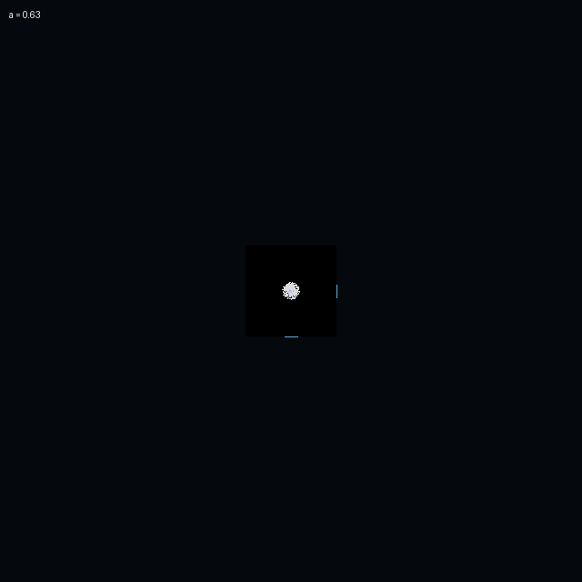
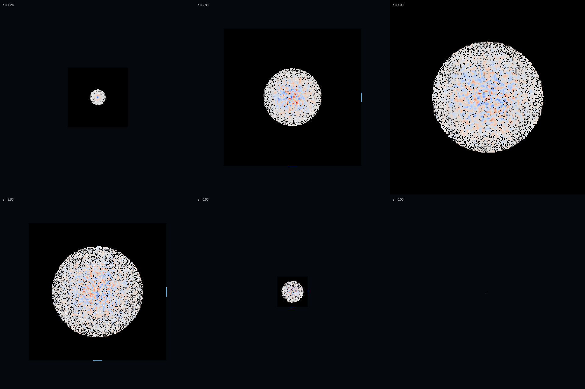

Тот же 2D-автомат P1 (фазовое разделение, N=1 млн), но пространство пульсирует: масштабный фактор a(t)=4·sin(πt/T). В начале a=0 — точка; к середине a=4 — максимум; к T=20 000 — снова точка. CA считается в сопутствующих координатах, биты сохраняются: 1 000 000 на всех кадрах.

Круг — граница пространства (радиус ∝ a); цвет — сглаженный заряд p−n. Структура расширяется вместе с пространством, затем сжимается в точку.

Слева направо, сверху вниз: a≈0.6, 1.9, 4.0 (максимум), 2.4, 0.6, 0.0.
| Параметр | Значение |
|---|---|
| T | 20 000 |
| N бит | 1 000 000 |
| a(t) | 4·sin(πt/T) |
| a max | 4.0 |
| a в конце | 0.0 |
| активных клеток (comoving) | 47 776 |
| фронт (comoving) | 124.4 |
| Проверка | Статус | Значение |
|---|---|---|
| T=20 000 | PASS | 20000 |
| N=1 000 000 | PASS | 1000000 |
| a max=4 | PASS | 4.0 |
| a конец=0 | PASS | 0.0 |
| GIF и монтаж | PASS | 2 файла |
Код: native/ca2d.c (кадры), scripts/make_pulse_gif.py. P1-отчёт: ca2d.html.